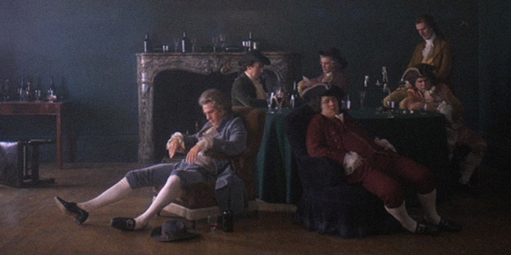
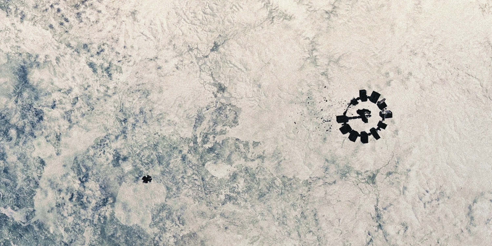
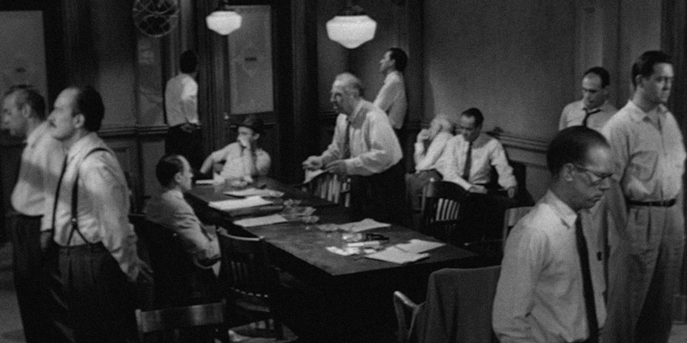
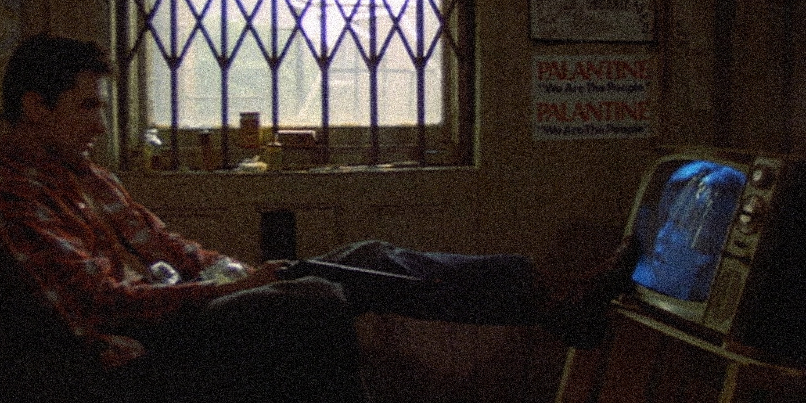

i watch films very frequently only since 2025. a former friend showed me the brilliance in front and behind the camera. i was fascinated and really fell in love with cinema.
i also watched a lot of Star Wars, Harry Potter, Pirates of the Caribbean and the Marvel Cinematic Universe — and i still like them all, but just as memories.




"by rights, we shouldn't even be here. but we are. it's like in the great stories, mr. frodo. the ones that really mattered. full of darkness and danger they were. and sometimes you didn't want to know the end... because how could the end be happy? how could the world go back to the way it was when so much bad had happened? but in the end, it's only a passing thing, this shadow. even darkness must pass. a new day will come. and when the sun shines, it will shine out the clearer. those were the stories that stayed with you... that meant something. even if you were too small to understand why. but i think, mr. frodo, i do understand. i know now. folk in those stories... had lots of chances of turning back, only they didn't. they kept going because they were holding on to something. that there's some good in this world, mr. frodo. and it's worth fighting for."